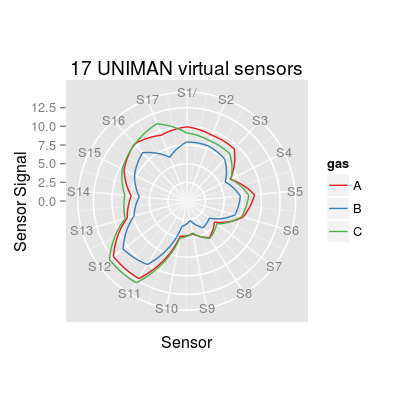
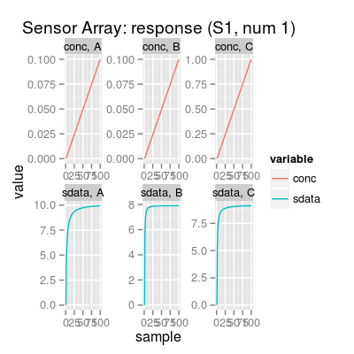
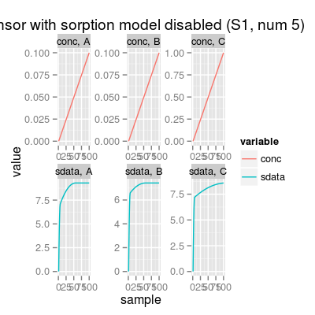
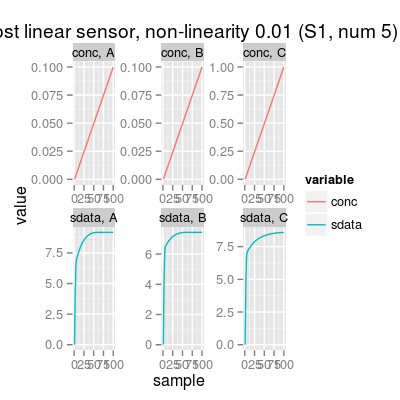
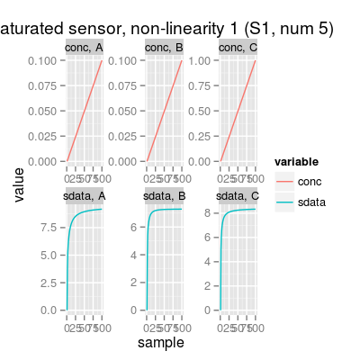
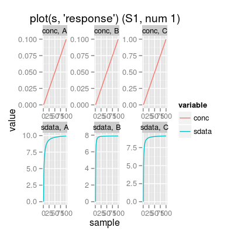

defaultParSensorArray() SensorArray(...) Sensor(num = 1, ...)
List of the default parameters.
Method getSensor.
Method affinity.
Class SensorArray is a extension of the class
Sensor for many sensor elements.
Function to get default constructor parameters of class
SensorArray.
Constructor method of SensorArray Class.
Wrapper function SensorArray.
Wrapper function Sensor
The array aggregates classes
ConcNoiseModel,
SensorNoiseModel,
SorptionModel, SensorModel
and DriftNoiseModel.
In comparision to the class Sensor, slot
num is a numeric vector, and class
SensorArray also inherits class
DriftNoiseModel.
See Sensor and
DriftNoiseModel for more details.
Slots of the class:
type |
Sensor
type (not used). Default value is polymeric. |
idx |
Sensor index (unique ID number). |
enableSorption |
Boolean whether
SorptionModel is enabled. Default value is
TRUE. |
... |
Slots inherited from
super-classes ConcNoiseModel,
SensorNoiseModel,
SorptionModel, SensorModel
and DriftNoiseModel. |
Methods of the class:
predict |
Predicts a model response to an input concentration matrix. |
coef |
Extracts the coefficient matrix from sensors. |
csd |
Gets the
concentration noise level (inherited from class
ConcNoiseModel). |
csd<- |
Sets the concentration noise level. |
ssd |
Gets
the sensor noise level (inherited from class
SensorNoiseModel). |
ssd<- |
Sets the sensor noise level. |
The plot method has the only type (parameter
y):
response |
(default) Shows the sensitivity curves per gas in normalized concentration units. |
# array: default initialization sa <- SensorArray() # get information about the array show(sa)Sensor Array of 2 sensors, 3 gases A, B, C - enableSorption TRUE, enableDyn FALSE - Sensor Model (num 1, 2), beta 2, data model 'ispline' - Sorption Model (knum 1, 2), alpha 2.25 - Concentration Noise Model (csd 0.1), noise type 'logconc' - Sensor Noise Model (ssd 0.1), noise type 'randomWalk' - Drift Noise Model (dsd 0.1), common model 'cpc'print(sa)SensorArray - enableSorption: TRUE (1) Sensor Model - num 1, 2 - beta 2 - 3 gases A, B, C - (first) data model - method: ispline (type: spline) - sensor model: coeffNonneg TRUE -- coefficients (first): 3.2174, 3.8031, 4.4229 ... 4.2032 (2) Sorption Model - knum 1, 2 - 3 gases A, B, C (3) Concentration Noise Model - 3 gases A, B, C - csd: 0.1 - noise type: logconc - log-factor: 1, 1, 2 (4) Sensor Noise Model - num 1, 2 - 3 gases A, B, C - ssd: 0.1 - noise type: randomWalk - noise-factor: 1, 1, 1, 1, 1, 1, 1, 1, 1 (5) Drift Noise Model - num 1, 2 drift common model - method: cpc - ndcomp: 1print(coef(sa)) # array coefficients[,1] [,2] [1,] 3.217389 3.008966 [2,] 3.803072 3.643202 [3,] 4.422950 4.299156 [4,] 5.350381 5.336516 [5,] 2.577624 2.611796 [6,] 0.000000 0.000000 [7,] 3.002658 2.807784 [8,] 3.602933 3.424680 [9,] 4.203208 4.041576#plot(sa) # model: custom parameters sa <- SensorArray(num=1:17) # 17 UNIMAN virtual sensors plot(sa, main="17 UNIMAN virtual sensors")
# array with quite linear sensors sa <- SensorArray(num=15:17, alpha=0.01, model="mvr") print(sa)SensorArray - enableSorption: TRUE (1) Sensor Model - num 15, 16, 17 - beta 2 - 3 gases A, B, C - (first) data model - method: mvr (type: mvr) - sensor model: coeffNonneg TRUE -- coefficients (first): 0.4382, 0, 0.0328 (2) Sorption Model - knum 15, 16, 17 - 3 gases A, B, C (3) Concentration Noise Model - 3 gases A, B, C - csd: 0.1 - noise type: logconc - log-factor: 1, 1, 2 (4) Sensor Noise Model - num 15, 16, 17 - 3 gases A, B, C - ssd: 0.1 - noise type: randomWalk - noise-factor: 1, 1, 1 (5) Drift Noise Model - num 15, 16, 17 drift common model - method: cpc - ndcomp: 1# add UNIMAN reference data (the models were build from) p1 <- plotResponse(sa, main="Array of more linear sensors") # sensor object: default initialization s <- Sensor() # get information about the sensor show(s)Sensor Array of 1 sensors, 3 gases A, B, C - enableSorption TRUE, enableDyn FALSE - Sensor Model (num 1), beta 2, data model 'ispline' - Sorption Model (knum 1), alpha 2.25 - Concentration Noise Model (csd 0.1), noise type 'logconc' - Sensor Noise Model (ssd 0.1), noise type 'randomWalk' - Drift Noise Model (dsd 0.1), common model 'cpc'print(s)SensorArray - enableSorption: TRUE (1) Sensor Model - num 1 - beta 2 - 3 gases A, B, C - (first) data model - method: ispline (type: spline) - sensor model: coeffNonneg TRUE -- coefficients (first): 3.2174, 3.8031, 4.4229 ... 4.2032 (2) Sorption Model - knum 1 - 3 gases A, B, C (3) Concentration Noise Model - 3 gases A, B, C - csd: 0.1 - noise type: logconc - log-factor: 1, 1, 2 (4) Sensor Noise Model - num 1 - 3 gases A, B, C - ssd: 0.1 - noise type: randomWalk - noise-factor: 1, 1, 1, 1, 1, 1, 1, 1, 1 (5) Drift Noise Model - num 1 drift common model - method: cpc - ndcomp: 1plot(s)
# sensor object: custom parameters s <- Sensor(num=5, enableSorption=FALSE) # sorption model disabled plot(s, main="Sensor with sorption model disabled")
s <- Sensor(num=5, alpha=0.01) # amost linear sensor plot(s, main="Almost linear sensor, non-linearity 0.01")
s <- Sensor(num=5, alpha=1) # saturated sensor plot(s, main="Saturated sensor, non-linearity 1")
s <- Sensor(num=5, csd=0, ssd=0, dsd = 0) # noise level is set to zero plot(s, "snoise", main="Noise-free sensor")s <- Sensor(num=5, csd=1, ssd=1, dsd = 0) # maximum reasonable level of noise plot(s, "snoise", main="Very noisy sensor")# method plot # - plot types 'y': response, noise s <- Sensor() # default model plot(s, "response", main="plot(s, 'response')")
# default plot type, i.e. 'plot(s)' does the same plotting plot(s, "snoise", main="plot(s, 'snoise')")